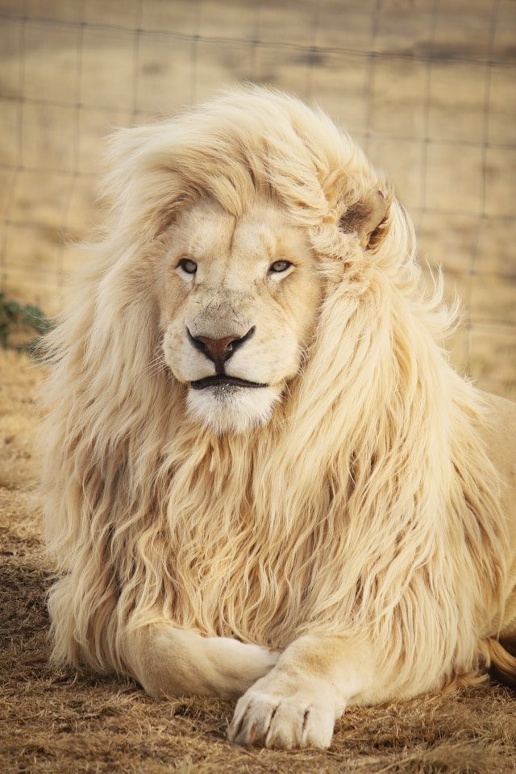

Animais Fantásticos


- 
Raposa vermelha
A raposa vermelha, cientificamente conhecida como Vulpes vulpes, é uma das espécies de raposa mais comuns e amplamente distribuídas no mundo. Pertence à família Canidae, a mesma dos cães e lobos.
Com uma pelagem característica de tonalidade avermelhada, a raposa vermelha pode atingir cerca de 1 metro de comprimento, incluindo a cauda, e pesar entre 4 e 10 kg. Sua expectativa de vida na natureza varia entre 2 e 5 anos, embora alguns indivíduos possam viver até 10 anos em cativeiro.
Esquilo
Os esquilos pertencem a uma grande família de mamíferos roedores, de pequeno e médio porte, conhecida como Sciuridae. No Brasil, são também conhecidos como serelepe, caxinguelê, caxinxe, quatimirim, quatipuru, agutipuru ou acutipuru.
Na Galiza e em algumas zonas de Portugal, também são conhecido por esquio.
Urso marrom
Os Ursos constituem uma família de mamíferos carnívoros de grande porte, contendo os ursos e os pandas. Eles são classificados como caníformes ou carnivoros caninos.
Os ursos são encontrados nos continentes da América do Norte, América do Sul, Europa e Ásia.
As características comuns dos ursos modernos incluem corpos grandes com pernas atarracadas, focinhos longos, orelhas pequenas e arredondadas, cabelos desgrenhados, patas plantígradas com cinco garras não retráteis e caudas curtas.
Lobo cinzento
Lobo é um animal carnívoro da família dos canídeos e que pertence ao gênero Canis.
São quatro espécies que recebem tal designação: o lobo-cinzento (Canis lupus), lobo-vermelho (Canis rufus), lobo-etíope (Canis simensis), lobo-dourado (Canis anthus ou Canis lupaster).
O lobo-oriental tem classificação discutível se espécie em si (Canis lycaon), uma subespécie do lobo-cinzento, ou um híbrido do lobo e coiote.
Macaco
Os macacos variam em tamanho desde o sagui-pigmeu, que pode ser tão pequeno e pesando pouco mais de 100 g em peso, para o mandril macho, quase 1 m de comprimento e pesando até 36 kg.
Alguns são arbóreos (vivendo em árvores), enquanto outros vivem na savana ; as dietas diferem entre as várias espécies, mas podem conter qualquer um dos seguintes alimentos: frutas, folhas, sementes, nozes, flores, ovos e pequenos animais (incluindo insetos e aranhas).
Leão
O leão é uma espécie de mamífero carnívoro do gênero Panthera e da família Felidae.
A espécie é atualmente encontrada na África subsaariana e na Ásia, com uma única população remanescente em perigo, no Parque Nacional da Floresta de Gir, Gujarat, Índia.